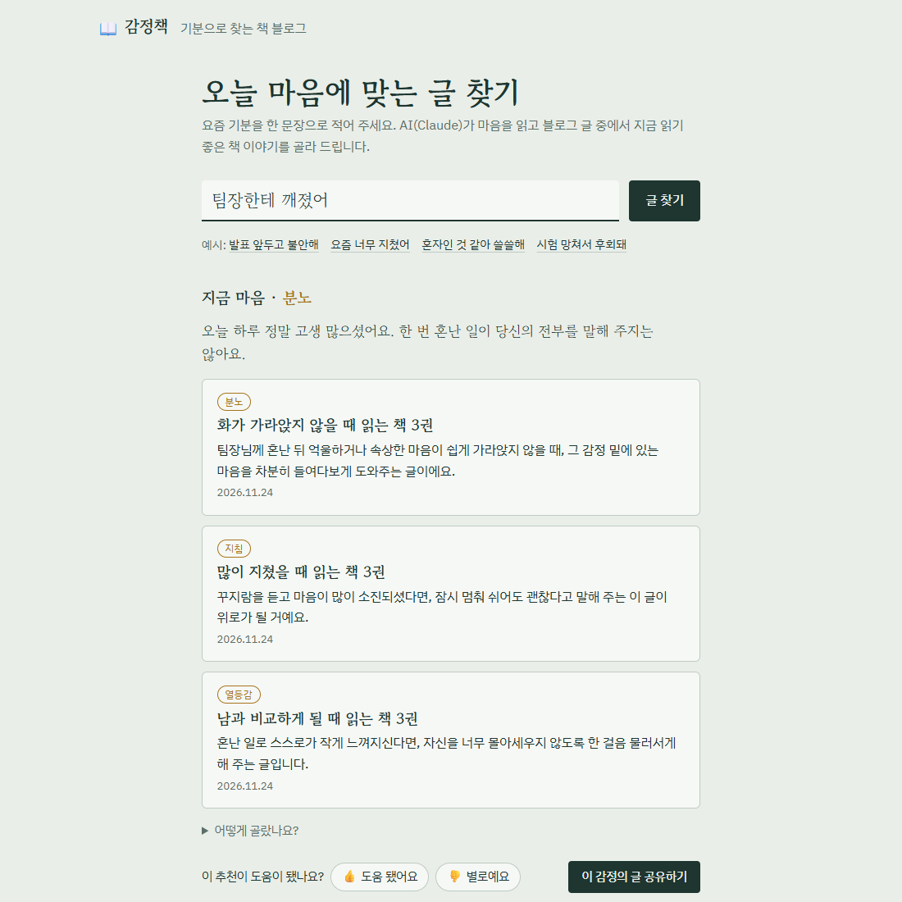
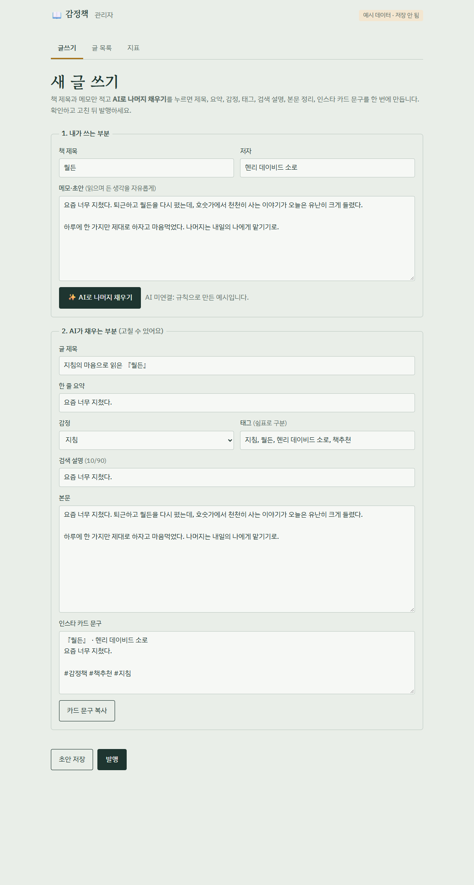
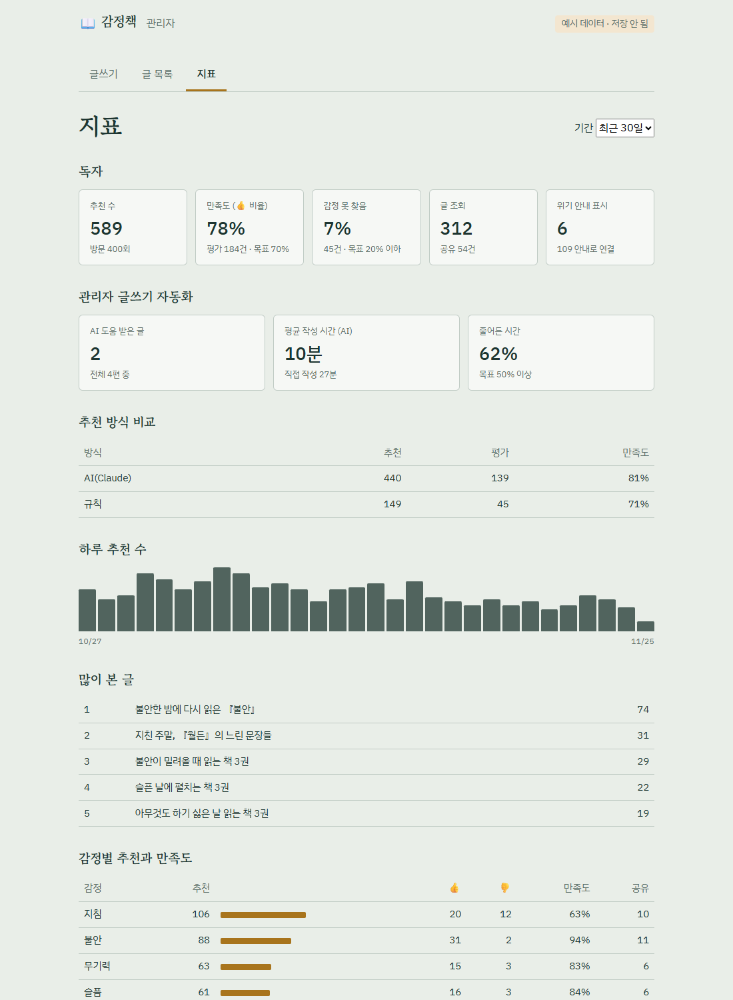
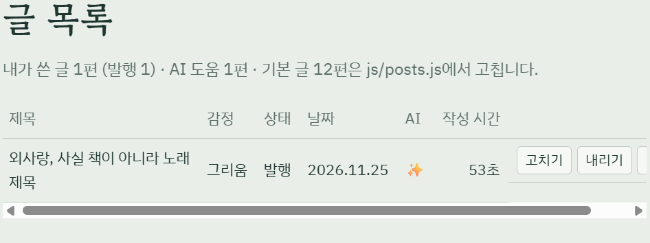
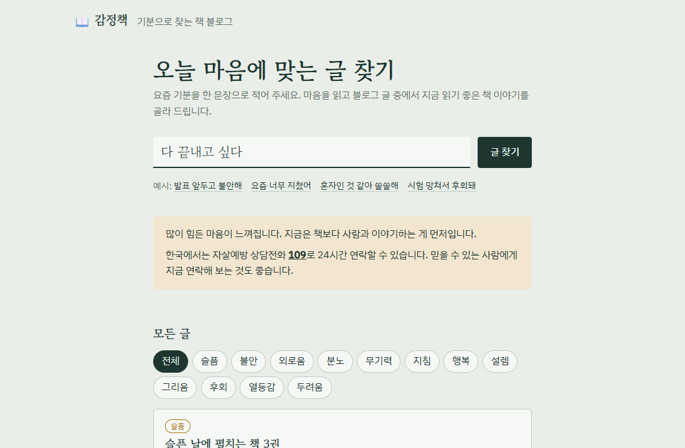

책 제목과 메모만 쓰면, 발행 준비는 AI가. · 오늘 기분, 한 문장이면 맞는 책 이야기.
| 누가 | 문제 | 근거 |
|---|---|---|
| 관리자(나) | 메모는 금방 쓰지만 발행용 항목 6가지를 따로 쓰느라 한 편에 약 25분, 그래서 발행을 미룸 | 직접 작성 경험 (*추정, 비교 측정 예정) |
| 독자 | "팀장한테 깨졌어"처럼 감정 단어 없이 상황만 말하면 맞는 글을 못 찾음 | v1.0 규칙 방식 테스트 K1~K3 실패 |
| 독자 | 힘든 순간에는 책보다 도움이 먼저 필요 | 안전 요구사항 |
| 대상 | AI 기능 | 자동화한 일 |
|---|---|---|
| 관리자(나) · 핵심 | AI 발행 도우미 | 책 제목·메모 → 제목, 요약, 감정, 태그, 검색 설명, 본문 정리, 인스타 카드 문구를 한 번에 → 확인·수정 후 발행 |
| 독자 | AI 글 찾기 | 기분 한 문장 → 문장 전체를 읽고 블로그 글 중에서만 3편과 맞춤 이유 추천 |
AS-IS · 모두 직접 작성, 약 25분
TO-BE · 목표 10분 이내 (첫 글 실측 53초)
| 원칙 | 왜 |
|---|---|
| 위기 표현은 AI보다 먼저 규칙으로 → 109 안내 | 안전 기능은 결과가 매번 같아야 하고 AI 오류에도 동작해야 함 (D-001) |
| AI 결과는 사람이 확인한 뒤 발행 | AI가 메모에 없는 내용을 지어낼 수 있음. 글의 주인은 운영자 (D-010) |
| AI가 실패하면 규칙 방식으로 | 크레딧 소진·서버 장애가 블로그 장애가 되지 않게 (D-011) |
| API 키는 중계 서버에만, 독자 문장은 저장 안 함 | 공개 코드에 키를 넣으면 누구나 사용 가능. 문장은 민감 정보 (D-008·009·014) |
| 11-13 | 프로토타입 v4 | 같은 문장을 규칙과 AI로 비교 → 규칙 방식의 한계(부정문, 상황 문장) 발견 |
| 11-24 | v1.0 감정 추천 | 규칙 방식 공개, 운영 지표 화면, 문서 체계(PRD·로그·테스트) |
| 11-25 | v2.0 블로그 + AI | 방문자·관리자 페이지, AI 2종 → Firebase 연결 → Vercel 배포 → Claude 연결 → 관리자 실제 발행 |
전체 과정은 GitHub 커밋 기록과 docs/WORKLOG.md에 남아 있습니다.





| 구분 | 확인 내용 | 결과 |
|---|---|---|
| 단위 | 감정 인식, 위기 검사, 글 고르기, AI 답 검증, 지표 집계 (tests/run.html) | ✅ 55/55 |
| 화면 | 방문자 13 + 관리자 7 시나리오 실제 조작, XSS 차단 (tests/ui.html) | ✅ 20/20 |
| 중계 서버 | 다른 사이트 403, 위기 문장은 AI 호출 없음, 요청 제한, 관리자 확인 (tests/server.html) | ✅ 13/13 |
| 보안 규칙 | 배포 사이트에서 비로그인 읽기·쓰기 6가지 실제 요청 | ✅ 6/6 |
| 실제 AI · 실사용 | Claude 실제 호출 3문장 · 관리자 로그인 → AI 채우기 → 발행 → 블로그 표시 | ✅ 3/3 · 1/1 |
| 독자 문장 | 규칙 방식 (v1.0) | Claude (v2.0) |
|---|---|---|
| 팀장한테 깨졌어 | 감정 못 찾음 | 분노 · "한 번 혼난 일이 당신의 전부를 말해 주지는 않아요." |
| 이제 불안하지 않아 | 불안 (잘못 읽음) | 행복 · 지금의 평온함에 맞는 글 |
| 시험 망쳐서 엄마한테 미안해 | 감정 못 찾음 | 후회 · "후회가 남을 때 읽는 책 3권" |
관리자 도우미는 메모 내용("외사랑은 책이 아니라 노래 제목")을 그대로 반영해 없는 줄거리를 지어내지 않았고, 독자 추천 응답은 약 5초로 목표(10초) 안입니다.
| 다음 계획 |
|---|
| 리뷰 6편(AI 3 / 직접 3)으로 작성 시간 50% 단축 검증 |
| 설문(운영자 10·독자 30)과 지인 10명 베타 테스트 |
| 상용화: 비공개 저장소·운영용 Firebase 분리, 관리자 Google 로그인 |
| 크레딧 주 1회 점검, 필요시 claude-haiku-5-5로 전환 |
제출물: 블로그 https://ttottibabo.github.io/emotionbook/ · GitHub https://github.com/ttottibabo/emotionbook · docs/PRD.md · docs/TEST_REPORT.md · docs/AGENT_GUIDE.md · docs/DECISION_LOG.md · docs/SUCCESS_FAILURE_LOG.md